User journey
From scattered protocol notes to one calm operating layer.
Follow Alex, a detailed routine tracker, as QuikShot turns real-world friction into a structured app flow: setup, site rotation, reminders, logging, correction, history, and review.
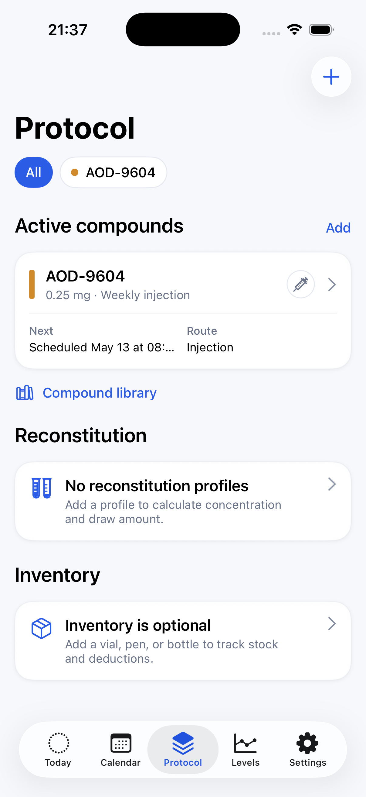
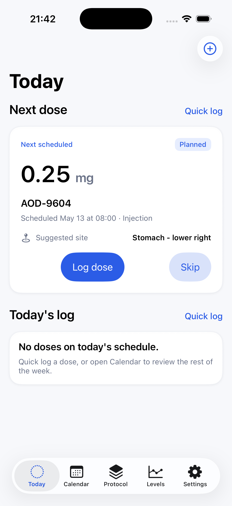
Meet Alex
He does not need more discipline. He needs less fragmentation.
Alex tracks a routine that is not just one weekly shot, and the current system has too many small parts: reminders, a spreadsheet, vial notes, injection-site memory, and after-the-fact corrections.
- Schedule, dose history, and vial math live in separate places.
- Site rotation becomes hard to trust after a busy week.
- Inventory only stays accurate when he remembers to update it.
- He wants useful estimated levels without a technical dashboard.
01 / First launch
The app starts where the real problem starts.
Alex opens QuikShot because his protocol has become too much for ad hoc tools. The first screen shows the practical shape of the product: schedules, dose log, sites, reconstitution profiles, optional inventory, and estimated levels.
Instead of giving him a marketing tour, the app gives him two useful doors: create the first protocol or browse the compound library.
Real-world hook
He is not trying to learn a new system. He is trying to stop rebuilding the same protocol context every week.
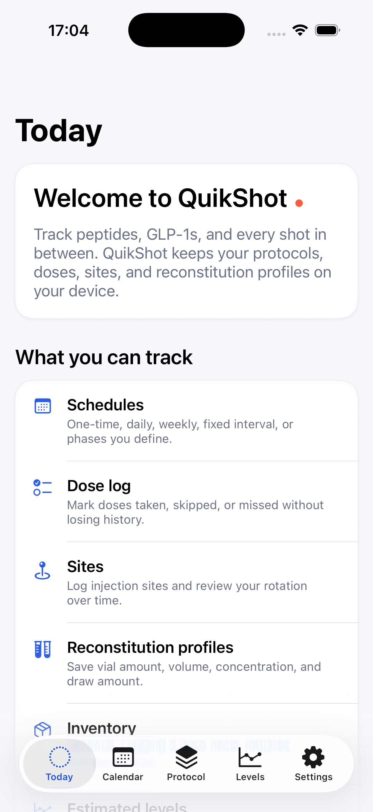
02 / Compound and protocol setup
Library metadata becomes his actual routine.
Alex starts from the compound library, then turns that selection into a protocol. The setup flow captures the parts that used to live across reminders, notes, and spreadsheets.
- Compound identity, route, and dose unit.
- Dose amount per occurrence.
- Weekly, daily, fixed-interval, one-time, or phase-based schedules.
- Reminder preferences and optional detailed reminder copy per protocol.
- Injection-site rotation and optional logistics links.
Real-world hook
The protocol is not a calendar event anymore. It becomes a structured object Alex can return to.
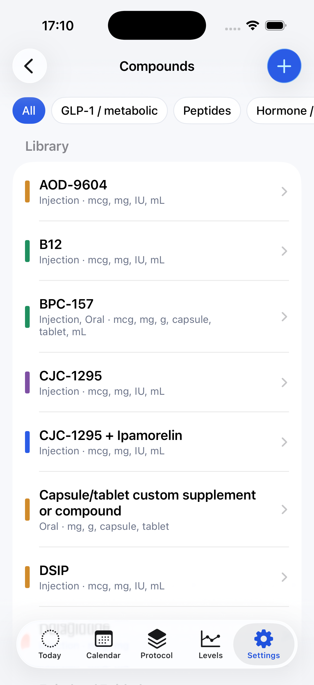
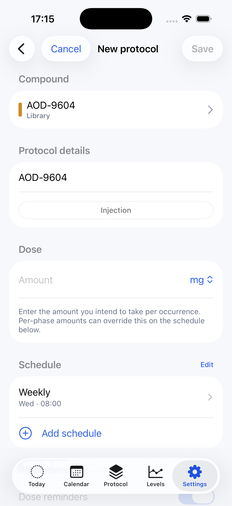
03 / Plan workspace
The spreadsheet starts losing its job.
After setup, the Plan tab becomes Alex's workspace. It shows active compounds, route, dose, next scheduled occurrence, and direct entry points for reconstitution profiles and inventory.
That matters because logistics can stay attached to the protocol. Alex can add vial amount, reconstitution volume, concentration, draw amount, IU, inventory form, remaining amount, status, and date fields when those details are useful.
Real-world hook
Some days he only logs a dose. Other days he needs concentration, draw amount, and stock context in the same place.
04 / Site rotation and reminders
The support layer lives around the protocol.
Alex used to keep site rotation in a note. QuikShot moves it into the protocol context, where active sites can be chosen and ordered for each injection protocol.
Reminders live in their own Settings surface, but they connect back to the schedule: due-soon windows, scheduled-dose reminders, and overdue follow-ups.
Real-world hook
The app does not wait for Alex to remember his system. It brings the relevant context forward when he is about to act.
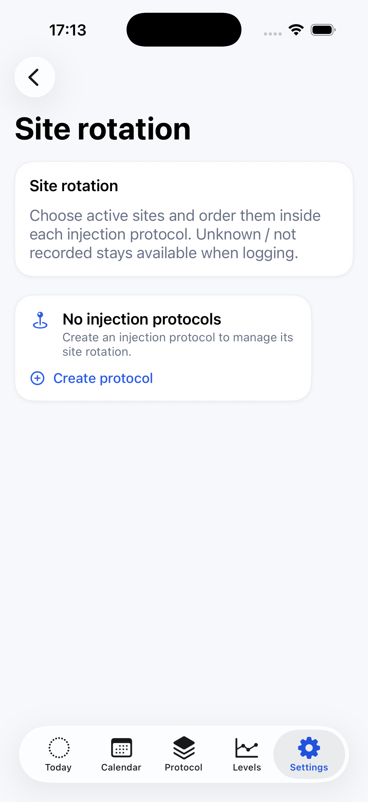
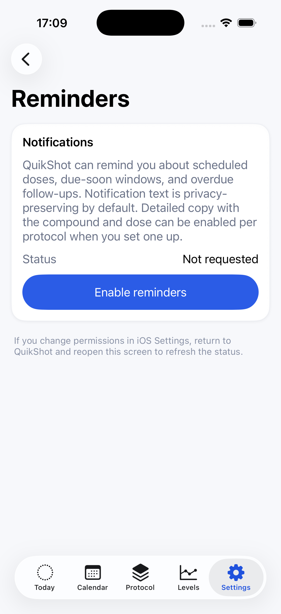
05 / Dose day
Today answers the immediate question.
On dose day, Alex should not inspect the whole app. Today shows the next scheduled dose, state, route, time, and suggested site. The primary actions match the moment: log the dose or skip it.
Quick log remains available for doses that happen outside the schedule. When linked context exists, Today can fold in estimated-level, inventory, and site-rotation context without making those systems mandatory.
Real-world hook
He is standing at the counter. The app needs to be fast enough for the moment and structured enough for the history.
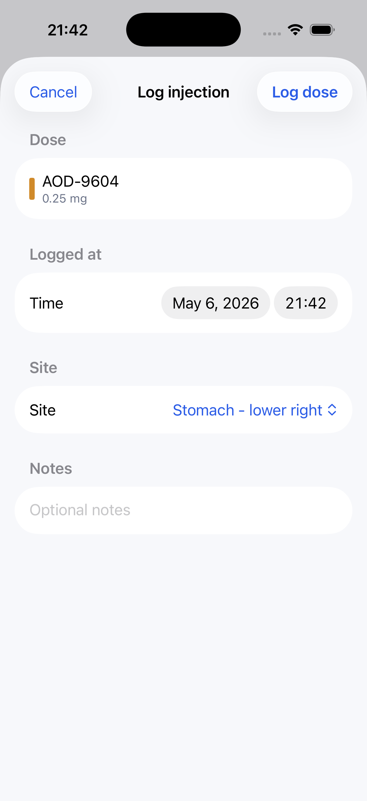
06 / Corrections and history
The system handles real-world messiness.
Later, Alex realizes the logged time or site needs a correction. Taken rows open an edit flow, so the same event is updated rather than duplicated.
Calendar becomes the weekly memory: planned, taken, skipped, missed, and overdue events can be reviewed by date. Empty days can route Alex back into schedule editing instead of leaving him stranded.
Real-world hook
The plan and the week rarely match perfectly. QuikShot keeps corrections attached to the original event.
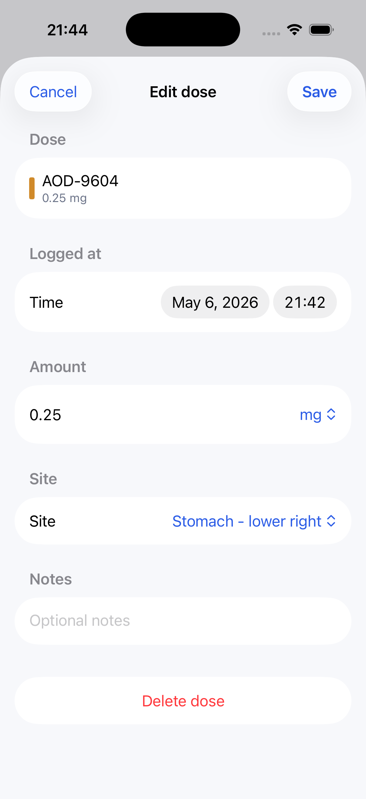
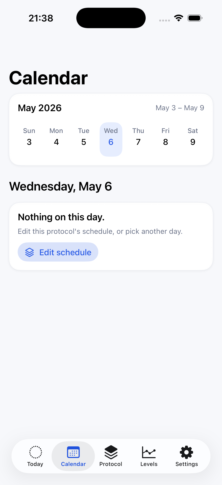
07 / Levels and maintenance
Depth appears when it has something useful to say.
Levels starts empty until there is enough protocol and logged-dose history to support an estimate. When the app can show estimated active amount, it does so per compound. Unsupported compounds remain fully trackable and can accept custom half-life input when Alex wants a personal estimate.
Settings keeps maintenance out of the daily flow: reminders, app preferences, About, and Data & Privacy controls stay separate from Plan and Supplies setup.
Real-world hook
Alex does not want a dashboard for its own sake. He wants context when the logged history is ready for it.
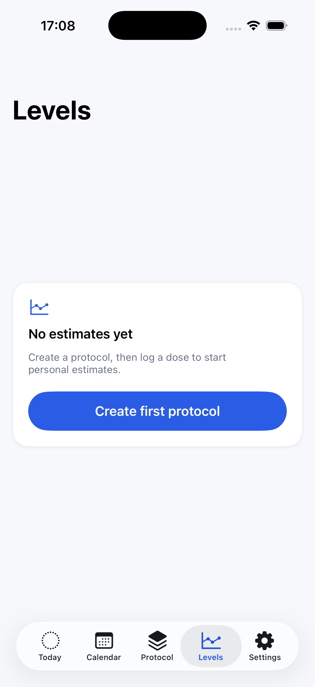
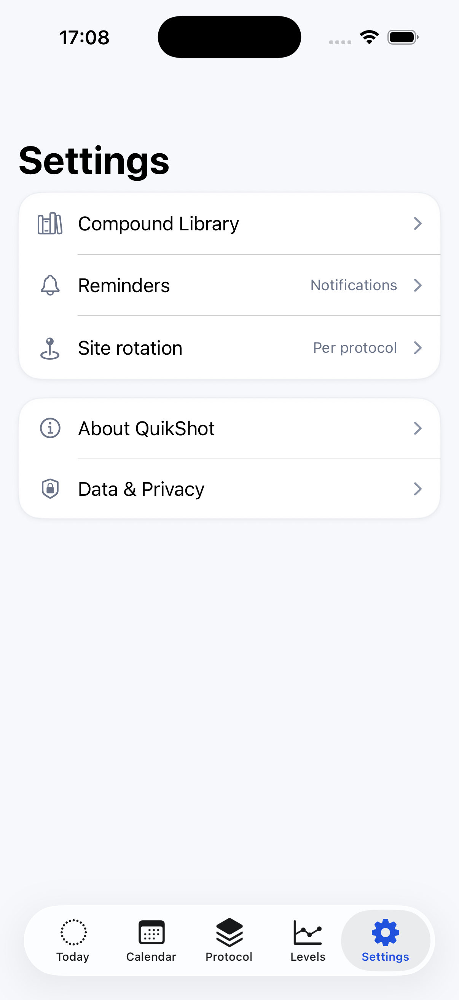
What the journey covers.
The presentation is story-led, but it still walks through the major app surfaces and intended feature flow.